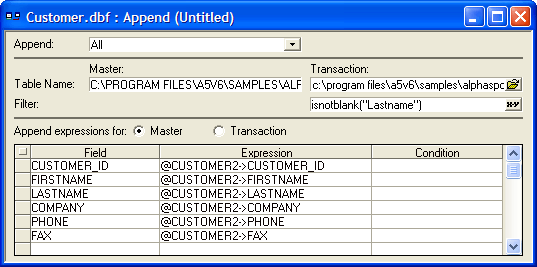
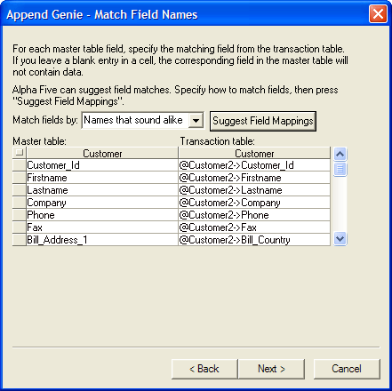

Append Operations
An append operation takes the records from the transaction table and adds them to the data in the master table. The append operation:
locks the master file
appends all the records from the transaction file
updates any indexes
This speeds up merges of large files. If any one else has the master table open, or if you open another form using the master table, the append will update the indexes after each record append.
Overview of the Append Process
For example, you have two tables which store the names and addresses of customers.
Master Table
|
Name |
Phone |
|
Abe Adams |
555-2811 |
|
Betty Becker |
555-2991 |
|
Chuck Chapman |
555-9831 |
Transaction Table
|
Name |
Phone |
|
Donna Dent |
555-9821 |
|
Ernie Eagerman |
555-4432 |
|
Fred Fensworth |
555-1111 |
Using an Append Operation you can take the records from one table and add them to the other.
Master Table
|
Name |
Phone |
|
Abe Adams |
555-2811 |
|
Betty Becker |
555-2991 |
|
Chuck Chapman |
555-9831 |
|
Donna Dent |
555-9821 |
|
Ernie Eagerman |
555-4432 |
|
Fred Fensworth |
555-1111 |
Performing an Append Operation
Display the Operations tab of the Control Panel.
Click New.
Select "Append Operation" from the Select operation list.
Select the master table (the destination of the records) from the Select Table/Set list.
 Note : The path to
the master table cannot contain any "~" characters.
Note : The path to
the master table cannot contain any "~" characters.
Click Create to display the Append Builder or Create Using Genie to display the Append Genie (see ((|#Using_the_Append_Genie|Using_the_Append_Genie)) ).
In the Append list select either:
"All" - to append all transaction table records.
"Unique only" - to append only unique records.
"Unique, replacing existing" - to append only unique records and replace any matching records in the master table.
Select the name of the transaction table (the source of the records) from the Transaction list.
In the Filter field enter an expression that selects records from the Transaction table.
Under the Field column select the fields you want to append to the master table.
Optionally, under the Expression column define an expression that modifies the Field value.
Optionally, under the Condition column define an expression that selects records to append to the master table.
Click the Run button.
Alpha Five appends the selected records from the transaction table to the master table. Picture
{kind=link}

Append Builder
If the structure or field names of the master (destination) and transaction (source) tables are not the same, you may need to make adjustments to the append settings so that Alpha Five knows which fields in the master table match fields in the transaction table; these settings are referred to as the field mapping.
The append settings let you do other things as well. For example, you can prevent duplicate records from being added, or you can overwrite records in the master table with up-to-date records from the transaction table. You can also choose to append only some of the records from the transaction table.
Append tables with different field names: By mapping fields from the transaction table to the master table, you can append records even if the tables' field names and structures are different.
Append only the fields you select: While appending records, you can choose to use only some of the fields while ignoring others.
Append only certain fields, conditionally: While appending records, you can choose to use only certain transaction-fields based on a conditional expression.
Modify transaction-data before appending: By creating a transaction expression in place of a transaction-field, you can modify the data before it is appended in the master table.
Append only some of the transaction-records: You can choose to include only records which match the selection criteria you specify.
Append only the non-duplicate transaction-records: You can choose to only append records which do not already exist in the master table. You specify the criteria for determining duplicate records.
Overwrite matching records in the master table to avoid duplicates: You can choose to avoid duplicate records by overwriting them with records from the transaction table. You specify the criteria for determining duplicate records.
Record the results: You can update individual transaction-records to indicate whether they were appended or used to replace master-records.
Save your append settings for later use: You can use the same append-definition again by saving it.
As Alpha Five appends each record, it takes data from the fields of the transaction table and copies the data into the fields of the master table. Since the fields from the transaction table and the master-table do not necessarily have the same field names, the Append Builder has a field mapping table in which you can pair-up fields from each table.
For example, you are copying information from the NAME field of a transaction table called NEW_YORK to the FULL_NAME field of the master table. The field mapping row would appear as follows:
Using an Expression Instead of a Single Field
As data is copied to the master table, you can manipulate the data by means of an expression. For example, you are appending data from a table which has separate PHONE and AREACODE fields to a master table which has one PHONE field which contains both the phone number and the area code. By using an expression, you can combine the Phone and Area code field from the transaction table and copy the combined value to the Phone field in the master table.
Conditionally Choosing Fields to Use in an Append
In some cases, you may want to copy information from the transaction-field only under certain conditions. For example, you were appending mostly United States customers to a database. The transaction table contains the field COUNTRY, which you want to copy only if the country is not the "USA." To do this, you define a condition under which the mapping should occur by typing a logical (TRUE/FALSE) condition expression into the Condition column.
The COUNTRY field is only copied to the master table if COUNTRY is not equal to "USA."
Selecting the Records to Append
When you define an Append Operation, you can use a filter expression to select the records from the transaction table to be copied to the master table. For example, you want to append a table of U.S. customers to a table of New York customers. You can use a filter expression to append only those U.S. records in which the Region field is equal to New York.
For a record to be selected, its REGION field must contain the value "New York."
If you want to avoid creating duplicate records when appending, you can choose one of two types of appends, Unique only and Unique, replace existing.
Unique only : Copies transaction table records which do not match records already contained in the master table.
Unique, replace existing : Copies all records from the transaction table to the master table. In cases where a matching record exists in the master table, it is overwritten by the transaction-record.
To specify what constitutes a matching record, you enter a master-linking-key expression and a transaction-linking-key expression. These expressions consist of one or more fields which uniquely identify each record. For example, you have a table which contains the field Customer_ID which contains a unique customer number. If both tables have the Customer_ID field, you can use Customer_ID as the linking field for both tables.
Suppose instead that a record could be uniquely identified by the First_name and Phone field. You can use the expression FIRST_NAME+PHONE as the linking key.
Updating the Transaction Table
After performing an Append Operation, it may be helpful to review the operation to see which records were appended and which were replaced (in the case of a Unique, replace existing append). One way to do this is by setting up the Append operation to automatically update the transaction table. Based on the manner in which the transaction-record was used, you can update one or more fields in the transaction table by mapping expressions in the field-mapping-table to fields in the transaction table.
To update the transaction table, you first click the Transaction radio-button; the field-mapping-table changes to let you map expressions to transaction-fields instead of master-fields.
Example of Transaction-mapping
For example, you set up an Append Operation to copy only unique records to the master table. After performing the append, you want to see which records were used and which were not. To do this, you can create a character field in the transaction table called Status. You then specify that if the record was appended, the word "appended" should be placed in the Status field.
The word "Appended" is copied into the Status field of each appended transaction table record.
When specifying transaction-field-mapping, you can also specify a condition upon which the expression is copied to the transaction-field. For a value to be copied to the transaction-field it must satisfy both the condition you specify and the Case you specify (in the first column).
Click Next > to continue.
Enter or select the name of the Transaction table.
Click Next > to continue.
Indicate whether the fields in the Master and Transaction tables have the same or different names.
Click Next > to continue.
If you selected No, fields in each table have different names, make a selection from the Match fields by list. Otherwise, continue with step 10.
Optionally, click Suggest Field Mappings to have Alpha Five suggest how the fields map between the Transaction and Master tables.
If necessary, manually enter the names of the corresponding fields in the Transaction and Master tables.
Click Next > to continue.

Indicate whether you want Alpha Five to check for duplicate records.
If you want to check for duplicates, indicate how to handle duplicate records.
Optionally, click Advanced Options for Duplicate Record Checking to display the Advanced Options dialog. Otherwise, continue with step 15.
Enter a filter expression that defines which Master table records to check for duplicates.
Click OK to continue.
Click Next > to continue.
If you selected Yes (checks for duplicates before appending records) in the previous screen, the following screen will appear. Otherwise, continue with step.
Indicate up to three fields under Master table that you wish to use to determine which records are duplicates.
Click Next > to continue.
Indicate whether you want to append All records or Selected records from the Transaction table.
If you click Selected records, make a selection from the Selected records list and fill in the resulting required fields.
Click Next > to continue.
Indicate whether you want to update a field in the Transaction table.
Click Next > to continue.
If you selected No in the previous screen, skip to step 27.
If you selected Yes in the previous screen, select the Transaction table field(s) that you want to update when a record is appended, not appended, or replaces a duplicate. Next to each selection in Fields to Update, enter an Update Expression that defines the value to write to the field.
Click Next > to continue.
Choose whether you want to run the operation now, save and then run the operation, or show how the append operation has been defined.
Click Finish to conclude.
If you selected Run the append operation now, (but first save the definition for future use), the Save appending settings as ... dialog box will appear.
Enter the name of the operation into the Name field and click OK.
If you selected Don't run the append operation now, just show me how the genie has filled in the append Builder, the details of the append operation will appear.
If you selected Run the append operation now, you will see a message box that indicates how many records will be appended. Click OK to run the operation or click Cancel to abort the operation.
See Also
Overview of Batch Operations, Table Operation Methods